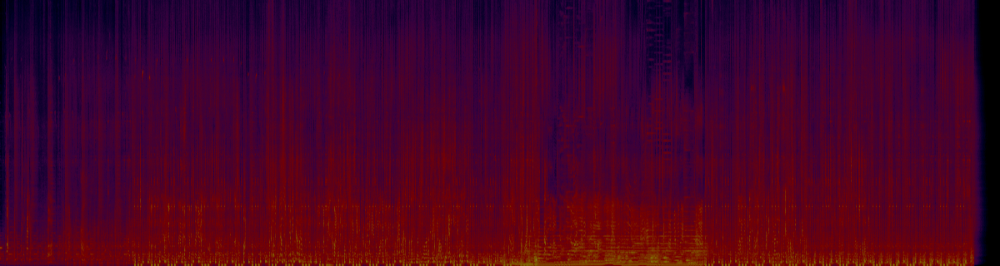

Written, recorded and mixed in three dimensions rather than mixed down into them.
Every source in the piece is encoded individually into an ambisonic field and positioned by azimuth and elevation rather than panned left to right. The same ambisonic master is then decoded three ways: to the 3D speaker layout in IRCAM’s Studio D, binaurally to headphones, and down to stereo. Production in Ableton, spatialization in Reaper with the IEM Plug-in Suite — StereoEncoder for encoding, AllRADecoder for each output format.
All source material was recorded for the piece: percussion and resonant metal and glass captured at the Ateliers Baschet on omnidirectional capsules, so the resonant tail of the Cristal Baschet and the behaviour of the room came with it, plus field recordings from the Bois de Vincennes that run raw underneath the whole track and also feed two granular layers.
The spatial motion is structural, not decorative. The granular layers do not pan, they orbit. They swell into the break because the argument has gone somewhere the beat cannot follow; the glitch layer takes the field at the end because the narrator has accepted what he is.

Headphones recommended. Plays in the bar at the bottom.
The full account of the piece — the sources, the spatial design section by section, and what the ambisonic workflow changed about how I compose.
Reaper · Ableton Live · IEM Plug-in Suite · Zoom H6 omni pair